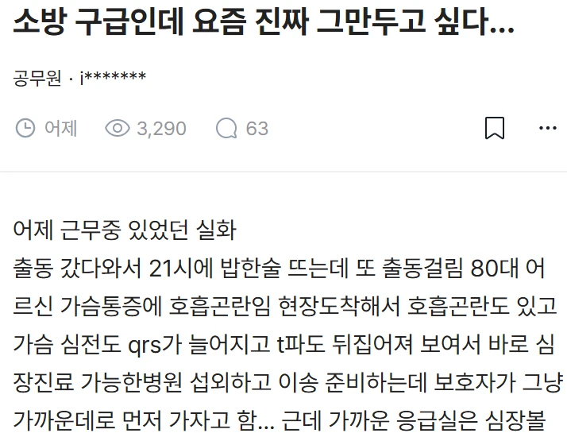
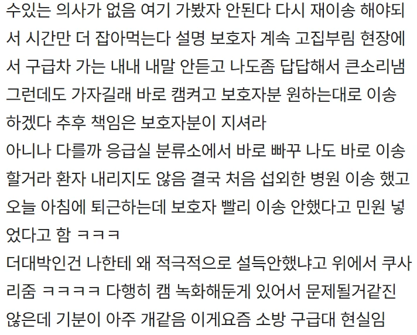

그럼 이제 지 멋대로 했다고 민원걸림 ㅋㅋ
진짜 민원도 좀 갮 같은 건 무시하는 게 되어야 해 ㅠㅠ
국평오 개돼지들이 선출한 시스템인데 감내해야지 다 국민들이 만든거 아님? ㅋㅋ 누구탓을 하고있노
누구 탓을하고있어 보이는데?
평균은 원래 5등급이야.. 말좀 알고 써
걍 저런업종은 나라에서 정신과진료라도 무제한 무료로 해줘야한다고 본다
저건 민원인 족칠게 아니고 쿠사리 준 새끼를 짤라야됨
맞음 스윗영포티 같은 새기
그냥 캠 상시촬영하고 결정권자가 ㅇㅋ 했으면 면책으로 하면 될듯
어느나라든 저런 진상은 있을거고
난 권한없고 감정적인 지능 낮은 사람한테는 화가 별로 안 남. 저걸로 뭐라고 하면 그 상급자한테 화남.
조직이 직원 편이 아니라는게 제일 화남
보호자가 할아버지 돌아가시게해서 보험금 챙기려고 하는건줄 알았음
구케의원님들이 만든나라인데 그걸 뽑은 대한민국국민 오십보 백보
내사촌동생 최근에 소방응급 들어갔는데...
나이먹으면 고집이 존나쎼서 바꿀수가없음
니네도 저런 60~80대 노인욕하지??
30~40대들도 마찬가지임 진행중인거지
아무리말해도 안들어서 나도 걍 환자들원하는대로해줌
사실 저런 저지능 빡통들은 맞딱뜨릴 때나 잠깐 화나지 진짜 오래 남는 분노는 조직에 대한 분노
밤에 119 소아응급 전화햇더니 어디 가라는게아니라 거기 전화해서 알아보라더라? 에라이
건강 관련 외엔 가족들 말 무시하고 걍 소방관이 자체판단해서 병원 데려다주면 안 되나? 싫으면 본인이 사설 앰뷸이나 택시타고 가면 되자너